推荐系统中多任务学习
Table of Contents
1 多目标优化简介
2 论文
2.1 Multitask Learning
论文1表示: Multitask Learning 通过将相关任务看作为归纳偏好(inductive bias)来提高主任务的泛化能力.例如:在图像识别中,同时训练一个网络来识别目标,形状,边界,区域,文理等目标,这些任务互相之间可以帮助识别,从而提升整体的效果.
本文中提出的多任务学习结构如下:
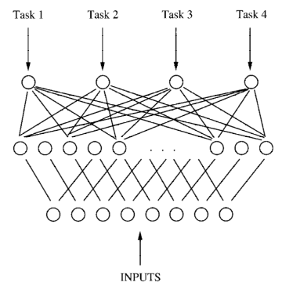
Figure 1: 4 个任务的多任务学习
2.1.1 MTL 是否有用?
对于 Multitask Learning 是否有用这个问题,论文采用了三个任务来验证.
- 1D-ALVINN
1D-ALVINN 为一个道路图像模拟软件,用来指导道路追踪算法学习.论文对该软件进行了改造,生成 1D 水平的道路向量,而非 2D 的图像. 主要的任务为预测道路的方向.论文添加了 8 个额外的任务:
单行还是双行道 双行道的道路中线 道路左边位置 道路右边位置 道路中线 路面强度 与路面连接区域的强度 道路中线强度 下图显示了单任务学习和多任务学习的结果:
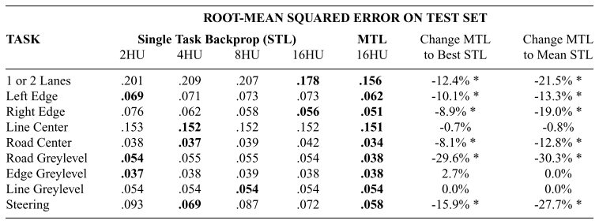
2.1.2 MTL 是如何工作的?
那么 MTL 是真的从相关任务中,学习到了更好的隐层表达,还是其他因素影响?
如果 MTL 真的是从相关任务中学习到了额外的信息,那么又是如何学习到的?
对于 MLT 是否真的学习到有用的信息这个疑问.论文先给出了除了归纳偏执意外的 3 个可能解释:
- 在神经网络反向传播中增加噪声本身就可以提高模型的泛化.如果相关任务并不相关时,可以将相关任务的梯度看作是噪声.
- 可以将相关任务的梯度看作是对隐层的梯度的加强,从而加速了隐层的学习率.
- net capacity 由于隐层是所有任务共享的,那么是不是因为变相降低了模型的 capacity,从而提高了模型的泛化能力.
论文随意 shuffle 相关任务的目标值,然后发现模型的表现降低了.所以可以直接认为相关任务对主任务起到了归纳偏执的作用,并不是其他原因(噪声,加大学习率).
对于 net capacity 解释,论文将 MTL 的网络 capacity 加大到所有 STL 之和,发现 MTL 仍然要比单独的 STL 要好.
那么 MTL 是如何从相关任务中学习到额外的信息来提高模型泛化的呢?
- statistical Data Amplification
- 当数据具有噪声的时候,扩大数据集常常能够模型泛化能力的提升.假设两个具有噪声的任务 T 和 T^{'},两个任务具有相同的隐层表达 F.那么如果一个网络能够同时学习两个任务,并且能够学习到两个任务可以共享隐层表达 F,那么采用两个任务同时学习 F 要比单独学习要好.
- Attribute Selection
- 任务具有多个输入并且具有噪声的时候,单独的模型很难确定输入和 F 表达之间的关系.但是当任务同时学习多个任务的时候可以更好的选择出和 F 有关的输入.
- Eavesdropping
- 假设隐层表达 F 对与任务 T 和 T^{'} 都有用,并且任务 T 容易学习到 F 的表达,但是 T^{'} 不容易学习到.所有当两个任务同时训练时候,T^{'} 可以从任务 T 学习到隐层表达 F,从而是任务 T^{'} 表现更好.
- Representation Bias
神经网络的权重初始化对模型效果具有较大的影响.那么假设任务 T 的局部最小点为 A 和 B,任务 T^{'} 的局部最小为 A 和 C.那么如果联合训练任务时,更为容易进入到 A.MTL 需要找到对两个任务都表现好的隐层表达. 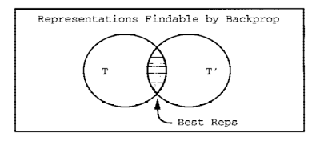
论文做实验表示,如果任务 T 对 B 更为偏向,T^{'} 对 A 和 C 没有偏向时.同时训练时,任务 T 找到 B 点,T^{'} 一般常常会找到 C 点.因为任务 T 对 B 点的偏向,给任务 T^{'}带来了一点的偏执,使得更容易找到 C.
MTL tasks prefer NOT to use hidden layer representations that other tasks prefer NOT to use.
2.1.3 其他需要注意
- 多任务预测
MTL 虽然在一个网络中同时训练多个任务,但是并不代表就是用该模型去预测所有任务的结果.采用 MTL 方法训练模型主要是从相关任务获取信息从而提高主任务的泛化能力.所以需要关注主任务的效果,可以允许相关任务效果稍微下降.
如果确实需要训练一个能够进行多任务预估的模型的时候,MTL 需要将所有任务看作一样重要,并且共享隐层需要具有充足的 capacity 来允许模型隐层的表达对单一任务有一些冗余,但是多任务训练时会表现较好.
如果早停需要采用的话,需要独立的在不同任务上使用.在训练过程中,对已经收敛的任务停止更新,未收敛的任务接着训练.额外的方法,是对已经收敛的任务降低学习率,从而使得其他任务能够接着训练.
- 学习率设置
MTL 常常所有任务以相同的学习速度达到最优,表现最好.如果主任务需要花费更长时间来达到收敛,那么随后的更新就无法从相关任务获取相关任务还没有学习到的表达.
解决方法就是调整不同任务的学习率.调低收敛速度快的任务的学习率,或者调高收敛速度慢的任务的学习率.
- MTL 不一定有用
MTL is a source ofinductive bias. Some inductive biases help. Some inductive biases hurt. It depends on the problem
需要分问题对待.
2.2 MMoE
MMoE2 提出一个基于 Multi-gate Mixture-of-Experts 结构的多任务学习网络模型,能够在不显著增加模型参数的基础上动态捕捉共享信息和独立任务信息.
MMoE 的多任务网络结构如图所示:
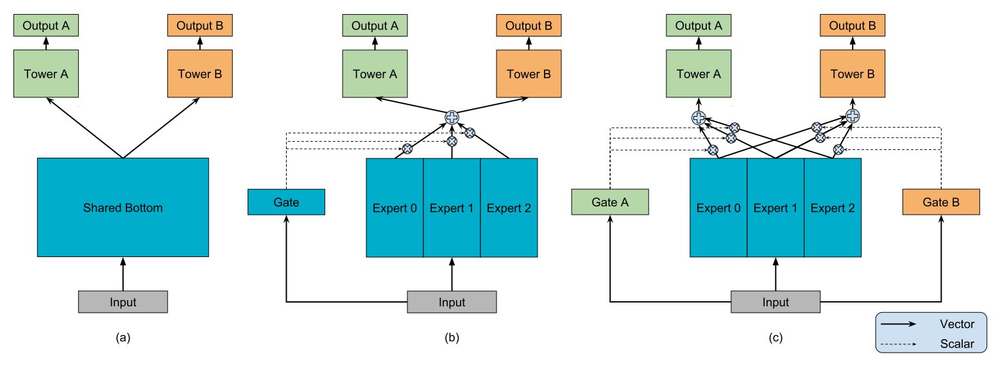
Figure 3: (a) 底层共享多任务模型.(b)一个 gate 的 MoE 模型.(c)多个 gate 的 MoE 模型.
上图(a)为常见的底层共享的多任务模型结构.(c)为 MMoE 网络结构,底层为多个专家网络.然后对于每个任务都引入一个独立的 gate 网络.
2.2.1 Mixture-of-Experts
原始的 MoE 模型如下:
\begin{equation} y=\sum_{i=1}^{n}g(x)_{i}f_{i}(x) \end{equation}其中: \(\sum_{i=1}^{n}g(x)_{i}=1\) 并且 \(g(x)_{i}\) 为 g(x) 的第 i 个输出的逻辑斯特值,表示第 i 个 export 的输出概率.
g(x)根据输入值来度量每个专家系统输出概率,加权和作为输出.
2.2.2 Multi-gate Mixture-of-experts
MMoE 在 MoE 的基础上对每一个任务都添加一个门网络:
\begin{equation} y_{k} = h^{k}(f^{k}(x)), \\ where f^{k}(x) = \sum_{i=1}^{n}g^{k}(x)^{i}f_{i}(x). \end{equation}门网络为采用 ReLU 作为激活函数的多层感知机网络:
\begin{equation} g^{k}(x) = softmax(W_{gk}x). \end{equation}\(W_{gk} \in R^{n \times d}\) 为可训练矩阵,n 为专家网络的数量,d 为特征维度.
2.3 NFM
Neural Factorization Machines3 通过引入 Bilinear Interaction(Bi-Interaction) pooling 提高模型高阶特征交叉能力.
2.3.1 计算公式
其中,前两项和 FM 一致;第三项为多层前向神经网络,对高阶特征交叉就行建模.如下图所示.
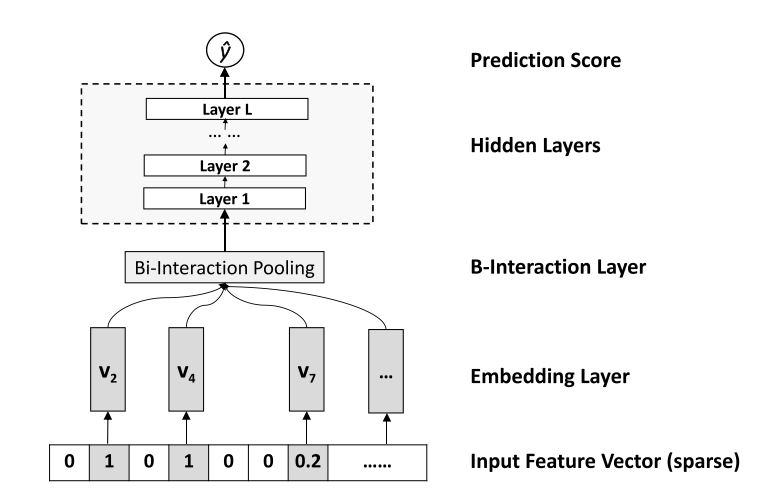
- Bi-Interaction layer
对 Embedding 特征进行 pooling 操作,将多个 Embedding 向量转为一个向量:
\begin{equation} f_{BI}(V_{x}) = \sum_{i=1}^{n}\sum_{j=i+1}^{n}x_{i}v_{i} \odot x_{j}v_{j} \end{equation}\(\odot\) 为元素相乘, \((v_{i}\odot v_{j})_k = v_{ik}v_{jk}\).上述操作可以看作时二阶特征交叉,然后按 embedding 维度进行加和,最后获得 k 维向量.
上述公式,参照 FM 的交叉项变化,可以改写如下(去掉最外层的逐 k 加和):
\begin{equation} f_{BI}(V_{x}) = \frac{1}{2}\left[ (\sum_{i=1}^{n}x_{i}v_{i})^2 - \sum_{i=1}^{n}(x_{i}v_{i})^2\right] \end{equation}后续跟着多层前向神经网络来执行高阶特征交叉:
\begin{equation} \hat{y}_{NFM}(x) = w_{0} + \sum_{i=1}^{n}w_{i}x_{i} + h^{T}\sigma_{L}(W_{L}(...\sigma_{1}(W_{1}f_{BI}(V_{x})+b_{1})...)+b_{L}) \end{equation} - NFM Generalize FM
如何设置 L 为 0,即不加任何前向网络,并且将 h 规定为常量向量(1,…,1),NFM 就是 FM 模型.
\begin{align} \hat{y}_{NFM-0}(x) &= w_{0} + \sum_{i=1}^{n}w_{i}x_{i} + h^{T}\sum_{i=1}^{n}\sum_{j=i+1}^{n}x_{i}v_{i} \odot x_{j}v_{j} \\ &= w_{0} + \sum_{i=1}^{n}w_{i}x_{i} + \sum_{i=1}^{n}\sum_{j=i+1}^{n}\sum_{f=1}^{k}h_{f}x_{if}v_{if} \odot x_{jf}v_{jf} \end{align}虽然 h 在 NFM 中是可学参数,但是在 0 层 NFM 中时,使得 h 为可学参数并不会带来模型表现的提升.因为该可学参数直接可以在 embedding 参数中学习到.
2.4 FwFMs
Field-weighted Factorization Machines4 引入特征域对重要性信息提高模型拟合能力.
论文首先研究了不同域的特征交叉重要性不同,采用互信息 mutual information 来检测域对的差异:
\begin{equation} MI((F_{k},F_{l}),Y) = \sum_{(i,j) \in (F_{k},F_{l})}\sum_{y \in Y} p((i,j),y)\log \frac{p((i,j),y)}{p(i,j)p(y)} \end{equation}下图显示在 Oath CTR 数据集上不同域对的互信信息值,可以看出不同域对具有很大的差异.
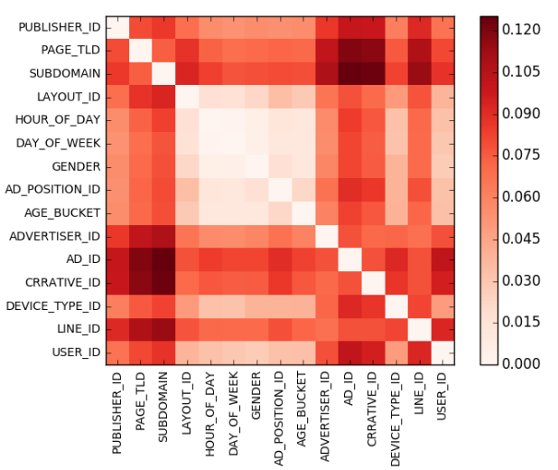
Figure 5: Oath CTR 数据集上不同域对的互信信息值
引入特征域对重要性信息后,FwFMs 模型计算公式如下:
\begin{equation} \Phi_{FwFMs}((w,v),x) = w_{0} + \sum_{i=1}^{m}x_{i}w_{i} + \sum_{i=1}^{m}\sum_{j=i+1}^{m}x_{i}x_{j} \left< v_{i},v_{j} \right> r_{F(i),F(j)} \end{equation}FwFMs 通过引入参数 \(r_{F(i),F(j)}\) 学习特征域对之间的重要性.
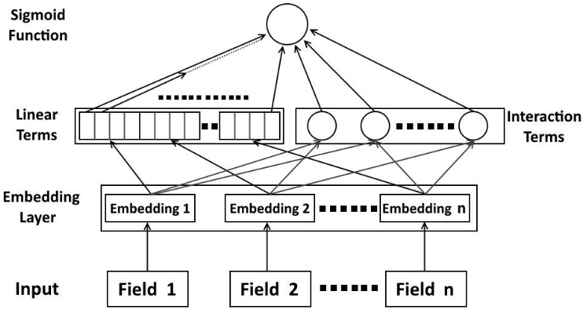
Figure 6: FwFMs 网络结构
2.4.1 线性项
对于 FM 公式中的线性项 \(\sum_{i=1}^{m}x_{i}w_{i}\),可以学习一个额外的 embedding 向量和二阶交叉的 embedding 向量作内积来获得线性项权值.
\begin{equation} \sum_{i=1}^{m}x_{i} \left< v_{i}, w_{i} \right> \end{equation}上述方法会带来更多的参数,为了降低参数量可以为每一个特征域学习一个 embedding 向量:
\begin{equation} \sum_{i=1}^{m}x_{i} \left< v_{i}, w_{F(i)} \right> \end{equation}2.4.2 特征域重要性
论文给出如下公式来度量模型学到的特征域重要性:
\begin{equation} \frac{\sum_{(i,j) \in F_{k},F_{l}}I(i,j) \cdot \#(i,j)}{\sum_{(i,j) \in (F_{k},F_{l})}\#(i,j)} \end{equation}#(i,j) 表示特征对(i,j)出现在训练集中的次数, \(I(i,j)\) 表示为模型中特征域的重要性.对于 FMs \(I(i,j)=\left|\left< v_{i},v_{j} \right>\right|\),对于 FFMs \(I(i,j)=\left|\left< v_{i,F_{l}}, v_{j,F_{k}}\right>\right|\),对于 FwFMs \(I(i,j)=\left|\left< v_{i},v_{j}\right> \cdot r_{F_{k},F_{l}}\right|\)
不同模型计算的特征域对重要性和互信息对比结果如下:
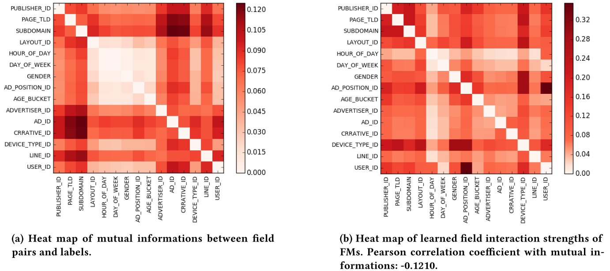
Figure 7: 特征域互信息和 FMs 计算的特征域重要性对比.
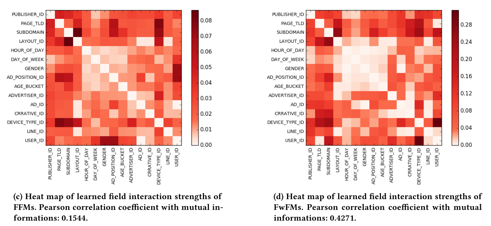
Figure 8: FFMs 和 FwFMs 计算的特征域重要性对比
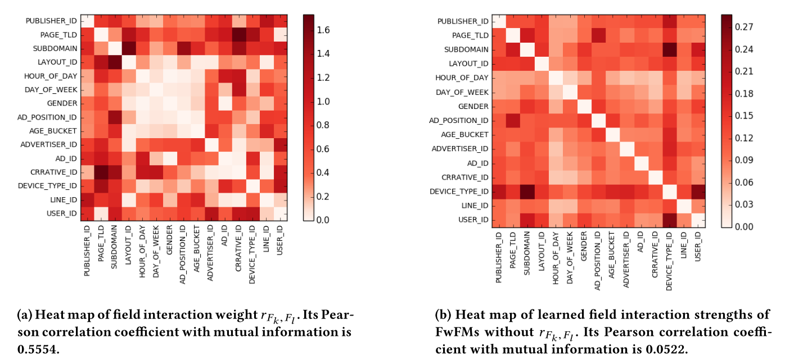
Figure 9: FwFMs 的 r 值和 FwFMs 去掉 r 值后计算的特征域重要性对比
2.5 How to Merge Loss
论文5提出在多任务学习中任务之间损失组合可以基于任务的噪声来学习最优权重.
论文首先在实例识别和景深两个任务上给出了损失权重对模型泛化能力的影响:
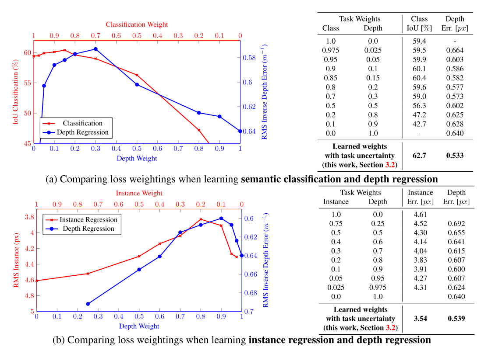
Figure 10: 多任务学习确实提高了模型的泛化能力,但是任务损失的权重组合对结果具有较大的影响.
论文提出基于最大化多任务似然函数方式来确定最优权重组合.设 \(f^{W}(x)\) 为输入为 x,权重为 W 的神经网络模型.对于回归模型,定义如下似然函数:
\begin{equation} p(y|f^{W}(x)) = \mathcal{N}(f^{W}(x),\sigma^{2}) \end{equation}对于分类问题,模型的输出经过 softmax 函数:
\begin{equation} p(y|f^{W}(x)) = Softmax(f^W(x)) \end{equation}对于多任务输出,给出如下的多任务似然函数:
\begin{equation} p(y_1,..,y_k|f^{W}(x)) = p(y_1|f^{W}(x))...p(y_k|f^W(x)) \end{equation}对于回归模型,对数似然如下:
\begin{equation} \log{p(y|f^{W}(x))} \propto -\frac{1}{2\sigma^2}\Arrowvert y - f^W(x) \Arrowvert^2 - \log\sigma \end{equation}假设多任务模型输出两个值 \(y_1,y_2\),则似然函数为:
\begin{align} p(y_1,y_2|f^W(x)) &= p(y_1|f^W(x)) \cdot p(y_2|f^W(x)) \\ &= \mathcal{N}(y_1;f^W(x),\sigma_1^2) \cdot \mathcal{N}(y_2;f^W(x),\sigma_2^2) \end{align}最小化负对数似然:
\begin{align} \mathcal{L}(W,\sigma_1,\sigma_2) &= -\log{p(y_1,y_2|f^W(x))} \\ &\propto \frac{1}{2\sigma_1^2} \Arrowvert y_1 - f^W(x) \Arrowvert^2 + \frac{1}{2\sigma_2^2} \Arrowvert y_2 - f^W(x) \Arrowvert^2 + \log{\sigma_1\sigma_2} \\ &= \frac{1}{2\sigma_1^2}\mathcal{L}_1(W) + \frac{1}{2\sigma_2^2}\mathcal{L}_2(W) + \log{\sigma_1\sigma_2} \end{align}多任务学习时,引入上述两个参数 \(\sgima_1\sigma_2\),作为多个任务的损失权重参数.当 \(\sigma_1\) 噪声变大,对应的 \(\mathcal{L}_1\) 损失权重变小.由于最后一项作为正则化项的存在,不会使得噪声变太大.
对于分类问题,分类似然函数增加了一个尺度系数:
\begin{equation} p(y|f^W(x),\sigma) = Softmax(\frac{1}{\sigma^2}f^W(x)) \end{equation}对数似然如下:
\begin{equation} \log{p(y=c|f^W(x),\sigma)} = \frac{1}{\sigma^2}f_c^W(x) - \log{\sum_{c'}\exp{(\frac{1}{\sigma^2}f_{c'}^W(x))}} \end{equation}和回归多任务一样,对于一个回归任务,一个分类任务的多任务,最小化多任务似然函数:
\begin{align} \mathcal{L}(W,\sigma_1,\sigma_2) &= -\log{p(y_1,y_2,=c|f^W(x),\sigma_2)} \\ &= -\log\mathcal{N}(y_1;f^W(x),\sigma_1^2)\cdot Softmax(y_2=c;f^W(x),\sigma_2) \\ &= \frac{1}{2\sigma_1^2} \Arrowvert y_1 - f^W(x) \Arrowvert^2 + \log\sigma_1 - \log{p(y_1,y_2,=c|f^W(x),\sigma_2)} \\ &= \frac{1}{2\sigma_1^2}\mathcal{L}_1(W) + \frac{1}{2\sigma_2^2}\mathcal{L}_2(W) + \log{\sigma_1} + \log{\frac{\sum_{c'}\exp{(\frac{1}{\sigma_2^2f_{c'}^W(x)})}}{(\sum_{c'}\exp{(f_{c'}^W(x))})^{\frac{1}{\sigma_2^{2}}}}} \\ &\approx \frac{1}{2\sigma_1^2}\mathcal{L}_1(W) + \frac{1}{2\sigma_2^2}\mathcal{L}_2(W) + \log{\sigma_1} + \log{\sigma_2} \end{align}2.6 ESMM
阿里在 2018 年提出了 Entire Space Multi-task Model6,通过用户行为序列(展示-点击-转化)在全数据集上采用多任务学习方法对 CTR 和 CVR 同时建模.
CVR 预估预估公式: \(pCVR = p(conversion|click,impression)\).
一般业内进行 CVR 预估的时候,是在点击的数据集上进行模型训练,而在所有数据集上进行预测.那么就会带来样本选择偏差问题7.常规的 pCVR 模型在进行模型构建的时候都有一个假设 \(p(conversion=1|click=1,impression) \approx (conversion=1|impression_c)\),\(imppresion_c\) 为具有点击行为的样本子空间.而在线进行 \(p(conversion|click,impression)\) 预测的时候,样本空间为全局样本空间.因为点击数据非常稀疏时,impression_c 是 impression 的子空间.
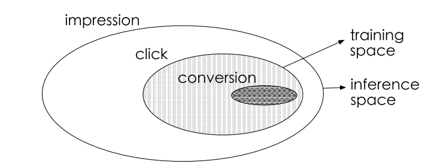
Figure 11: sample selection bias 问题.
带有 SSB 问题的 CVR 预估公式: \(pCVR = p(conversion|click)\).
其次,转化样本非常稀疏.模型很难拟合转化率.
2.6.1 Entire Space Multi-Task Model
ESMM 引入点击率和转化率之间的关系,引入中间值 pCTCVR,该值等于 CTR*CVR:
\begin{equation} p_{CTCVR}(click, conversion|impression) = p_{CTR}(click|impression) p_{CVR}(conversion|click,impression) \end{equation}网络结构:
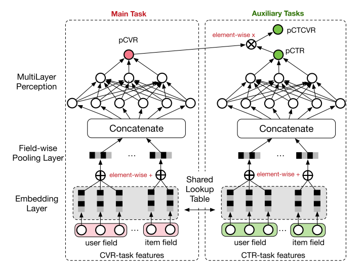
Figure 12: ESMM 网络结构,作边的网络和常规的基于点击样本训练的 pCVR 模型一样.
整体网络有三个输出: pCTR, pCVR, pCTCVR.
其中,pCTR 和 pCTCVR 在整个数据集上进行建模.而 pCVR 可以用如下公式获取:
\begin{equation} p_{CVR}(conversion=1|click=1,impression) = \frac{p_{CTCVR}(click=1,conversion=1|impression)}{p_{CTR}(click=1|impression)} \end{equation}看起来上述可以采用单独模型分别拟合 pCTR 和 pCTCVR,然后根据上述公式获得 pCVR.但是由于 pCTR 非常小,会出现数值不稳定情况.ESMM 采用了乘法方式来构建模型.
ESMM 的损失函数为:
\begin{equation} L(\theta_{cvr},\theta_{ctr}) = \sum_{i=1}^{N}l(y_{i}, f(x_{i};\theta_{ctr})) + \sum_{i=1}^{N}l(y_{i}\&z_{i},f(x_{i};\theta_{ctr}) \times f(x_{i};\theta_{cvr})) \end{equation}\(l(\cdot)\) 为交叉熵损失函数.
网络底层的 feature embedding 共享.
2.7 DUPN
阿里同时在 2018 提出了 Deep User Perception Network8 采用 RNN+Attention+多任务学习 对用户行为建模,获取用户兴趣表达.
网络结构如下:
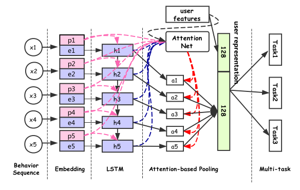
Figure 13: DUPN 网络结构.紫色代表 item,粉色代表行为,浅绿色为用户表达.
2.7.1 输入和行为 embedding
DUPN 输入为用户的行为序列 \(x=\{x_{1},x_{2},...,x_{N}\})\), \(x_{i}\) 表示用户的 ith 行为.每个用户的行为都为用户和 item 的交互,例如点击,购买等.所以 \(x_{i}\) 表示为元组 \(\left< item_{i}, property_{i}\right>\), \(item_{i}\) 为 item 特征, \(property_{i}\) 表示行为的属性特征(时间,行为类型,行为场景).
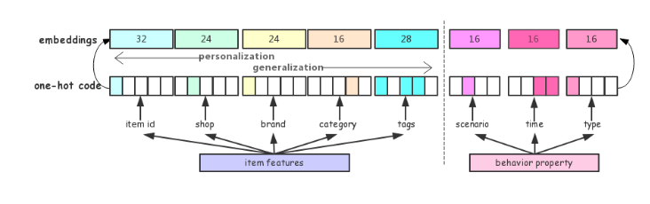
Figure 14: 行为 embedding
embedding layer 通过线性输入转为低维稠密向量 \(res_{i}=[e_{i},p_{i}]\), \(e_i\) 表示 item 的 embedding, \(p_{i}\) 为行为属性的 embedding:
\begin{equation} res_{i} = \left[ W_{emb}^{1}x_{i}^{1},W_{emb}^2x_i^2,...,W_{emb}^{F}x_{i}^{F}\right],W_{emb}^{f} \in R^{d_{emb}^f \times V_{f}} \end{equation}\(d_{emb}^{f}\) 表示 \(f^{th}\) 特征的 embedding 大小,\(V_{f}\) 为特征的字典大小.
2.7.2 Property Gated LSTM & Attention Net
对于行为序列 \(\left{res_1,res_2,...,res_N \right}\) 采用 RNN 序列化建模. 论文基于行为属性并不会揭示用户偏好信息,只是用来反映行为的重要程度,所以提出了 \(Property Gated LSTM\) 进行行为建模.
\begin{align} i_t &= \sigma(W_{ei}e_t + W_{pi}p_t + W_{hi}h_{t-1} + b_i) \\ f_t &= \sigma(W_{ef}e_t + W_{pf}p_t + W_{hf}h_{t-1} + b_f) \\ c_t &= f_t \cdot c_{t-1} + i_t \cdot \tanh{(W_{ec}e_t + W_{hc}h_{t-1} + b_{c})} \\ o_t &= \sigma(W_{eo}e_t + W_{po}p_t + W_{ho}h_{t-1} + b_o) \\ h_t &= o_t \cdot \tanh{(c_t)} \end{align}可以看到,属性 embedding 只影响门值(输入&遗忘&输出).
在 LSTM 输出序列 \(h=\left{ h_1,h_2,...,h_N \right}\) 之后,采用 attention layer 对所有的隐藏状态进行融合而不是采用最后时候的隐藏状态:
\begin{align} rep_s &= \sum_{t=1}^Na_th_t \\ a_t &= \frac{\exp{(attention(h_t,q,u,p_t;\omega))}}{\sum_{t=1}^{T}\exp{(attention(h_t,q,u,p_t;\omega))}} \\ \end{align}\(attention(\cdot)\) 为二层全链接网络.
网络结构如下:
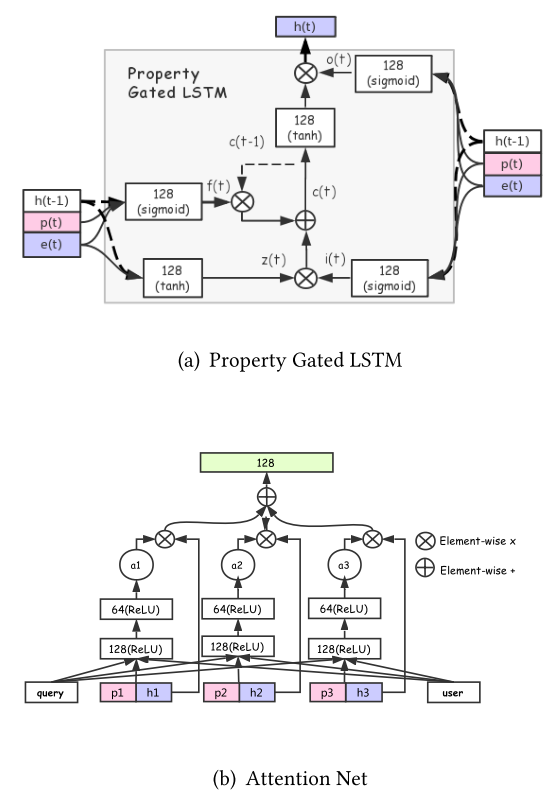
Figure 15: Property Gated LSTM 和 Attention Net
3 业内方案
3.1 美图
3.1.1 样本 reweight
在多任务学习中,不同目标样本数量不均衡会影响较少样本的目标优化.
美图通过 Item 的关注转化率对点击正样本进行 reweight,从而使得 ctr 相差不多的 Item 能够更容易推荐出关注转化率较高的 Item.
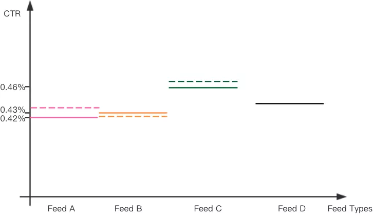
通过关注转化率来对点击样本进行加权来提高关注转化率高的 Item 的虚拟点击率,从而更容易推荐出关注高的 Item.
CTR: -1.09%,关注转化率: +12.03%.
3.1.2 Task-specific weighted Loss
多任务学习的缺点就是参数共享,在多个任务不相关时,任务之间会有相互扰乱的问题(share conflict).
Homoscedastic Uncertainty5 通过设定多个任务不同的学习率控制目标对整体模型的学习主导.
3.2 美团
美团10的模型结构如下:
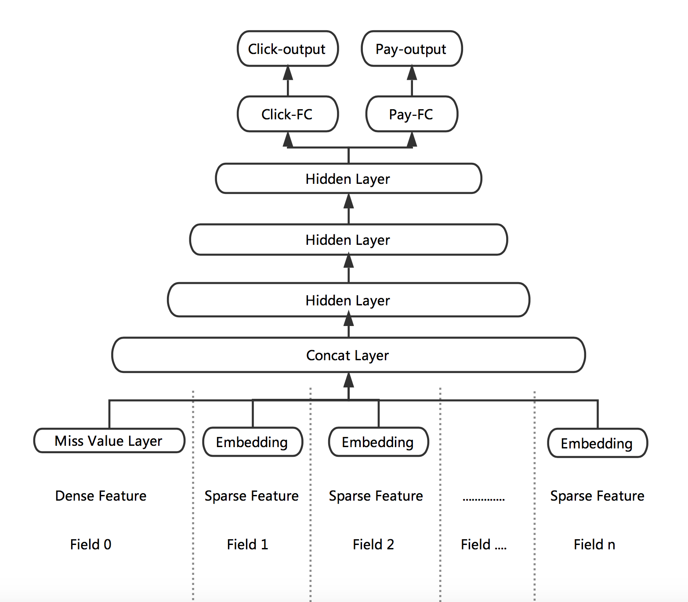
Figure 18: 美团 multi-task 网络结构.
底层 DNN 采用参数共享,最后一层全连接层分成两个输出层,分别对应着点击和购买.线上预测的将两个输出进行线形融合.
在上述的结构基础上,美团额外有两个优化:
- Missing Value Layer
针对训练样本中连续特征缺失问题,一般处理方法有:零值,或者取均值.零值会导致该项特征权重在本轮优化中无法进行更新,降低收敛速度.均值有一些武断.
参考 XGBoost 在处理缺失特征时,会根据 Loss 将缺失样本分到左右子树.美团提出了自适应处理缺失值的方法:
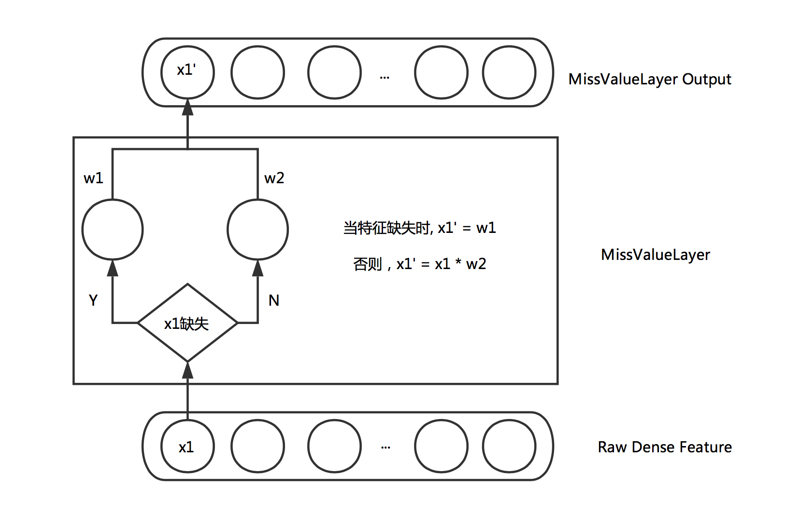
Figure 19: Missing Value Layer
- KL-divergence Bound
- 不同的目标带有不同的噪声,如果通过物理意义将有关系的目标关联起来,可以提高模型鲁棒性,降低单独标签的噪声.例如:点击率*转化率=下单率.所以在多个优化目标之间加上了基于 KL 的一个损失.并且由于 KL 散度是非对称的,所有优化的是 KL(p|q)+KL(q:p). CTR 效果带来了 1.23% 的提升.
3.2.1 NFM
3.2.2 ID 类特征
通过 ID 类特征来表达用户兴趣和 Item.
- Item 向量表达
- Item ID 稀疏性问题,采用随即初始化+模型学习,非常容易出现过拟合.解决方法,预训练的 Item 向量初始化+训练 fine tuning.
- 用户兴趣表达
- 用户可以采用用户历史序列中的 Item 向量进行 Average Pooling, Max Pooling, Attention Pooling 的方法进行融合表达.
3.3 知乎
主要是基于 MMoE 实现多任务学习.
3.4 信息流段视频时长多目标优化11
文章中认为视频推荐优化目标分为两类:
- 感知相关性优化
- 点击模型优化(CTR/CLICK)
- 真实相关性优化
- 时长多目标优化(停留时长 RDTM/播放完成率 PCR)
文章主要通过样本 reweight 的方法,在点击 label 不变情况下,时长长的样本进行加权从而影响时长目标.
原始 youtube-net 采用的是加权逻辑回归,那么在点击较少的场景下,对数发生几率接近播放长时间的期望:
\begin{align} \frac{\sum_{i}{T_{i}}}{N-k} &= \frac{\sum_{i}{T_{i}}}{N} \frac{N}{N-k} \\ &= E\left[ T \right] * \frac{1}{1-k/N} \\ &= E\left[ T \right] * \frac{1}{1-p} \end{align}N 为样本数量,K 为正样本数量,T_{i} 为第 i 个样本停留时长,P 为点击率.那么在 p<<1 的时候,上述的对数发生几率为 E[T],停留时长的期望.
该文章提出的加权方式不是单纯直接以播放时长加权,而是采用视频时长分段,然后对停留时长完成率进行分位数归一化,并进行威尔逊置信区间平滑,从而使得各视频时长段的播放完成率相对可比.
4 Roadmap
- reweight
- 采用时长进行点击样本加权
- 归一化播放率
- 参考信息流段视频时长多目标优化
- ctr + 归一化播放率
- loss 加和联合训练
- 播放时长预估
- 基于加权逻辑斯特回归进行预测播放时长(参考 youtube-net)
- 多任务学习
- 尝试 ESMM 等业内成熟的多任务学习模型进行点击率和播放时长联合训练.
Footnotes:
Rich Caruana. 1998. Multitask learning. In Learning to learn
Modeling task relationships in multi-task learning with multi-gate mixture-of-experts
Neural Factorization Machines for Sparse Predictive Analytics
Field-weighted Factorization Machines for Click-Through Rate Prediction in Display Advertising
Multi-task learning using uncertainty to weigh losses for scene geometry and semantics
Entire Space Multi-Task Model: An Effective Approach for Estimating Post-Click Conversion Rate
Learning and evaluating classifiers under sample selection bias.
Perceive Your Users in Depth: Learning Universal User Representations from Multiple E-commerce Tasks